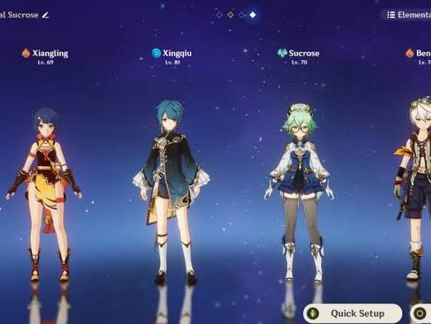

El poder oculto de las Reacciones Elementales
En Genshin Impact, el daño no proviene únicamente de la rareza de un guerrero, sino de cómo interactúan sus elementos en combate. Al combinar habilidades de fuego, agua o electricidad, puedes multiplicar tu daño exponencialmente sin necesidad de haber invertido dinero real en el sistema de gachapón.
El Equipo Nacional F2P de Alta Eficiencia
Existe una alineación mítica de personajes de 4 estrellas que es capaz de limpiar la Espiral del Abismo de manera óptima. Esta combinación es extremadamente accesible para cualquier principiante y se fundamenta en las reacciones de Vaporización y Torbellino.
Los cuatro integrantes indispensables para armar esta potente sinergia de combate son los siguientes:
- Xiangling: El motor de daño Pyro principal gracias a su habilidad definitiva Pyronado.
- Xingchiu: Aplica el elemento Hydro de forma constante y ofrece reducción de daño recibido.
- Bennett: El mejor soporte del juego, cura al equipo y otorga un enorme bono de ataque dentro de su círculo.
- Sacarosa: Agrupa a los enemigos y comparte Maestría Elemental para potenciar las reacciones.
